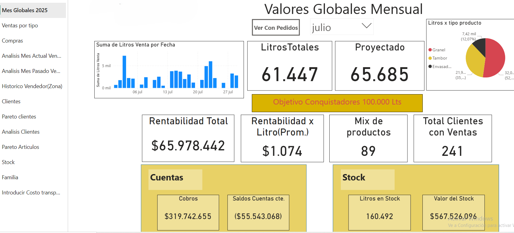
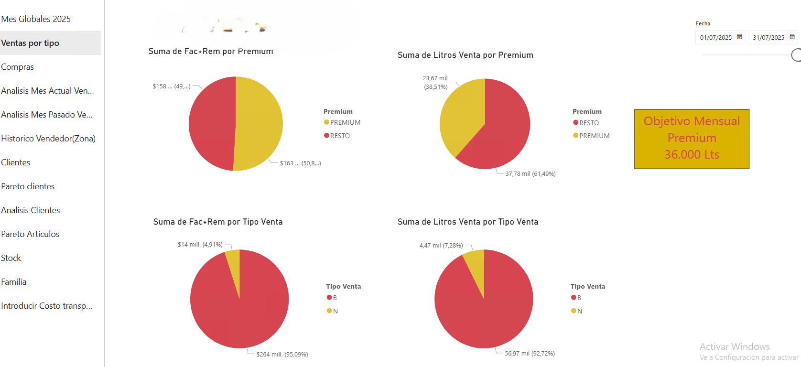

Santiago Celli
Analista de Datos | Data Scientist | Entusiasta del ML
Analista de Datos | Data Scientist | Entusiasta del ML
Profesional con experiencia en mantenimiento industrial migrando al mundo del análisis de datos. Con conocimientos en Python, Power BI, SQL y visualización de datos. Busco integrar equipos de data science con foco en resultados de negocio.
Análisis completo con dashboard en Power BI y recomendaciones accionables. Se identificaron productos de alto margen, zonas prioritarias y patrones por cliente.
 Exploración de datos comerciales con clustering, análisis de correlación y predicción de demanda. Ideal para planificación de stock y foco comercial.
📄 Ver resultados del análisisProyecto para automatizar el monitoreo de ventas y niveles de tanques en estaciones de servicio. Los datos se extraen del ERP Calden y se consolidan en dashboards Excel conectados a SQL.
📧 santiagocelli@gmail.com